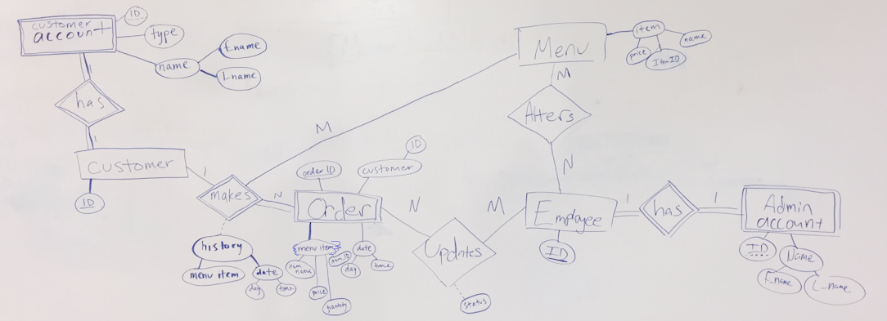
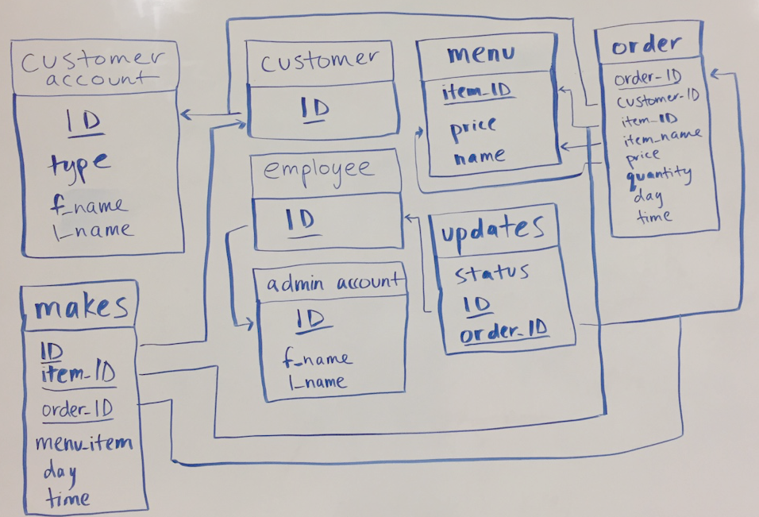

Project 3
Section 1: Introduction
The Cellar at University of Puget Sound (UPS) is a pizza restaurant operated by students and full time UPS employees. Currently, the Cellar takes carry-out orders in person or
over the phone by hand writing the orders on paper. This method during busy hours can be disorganized and overall can create excess paper waste.
Therefore, our project will be an online ordering service for the Cellar that will allow customers to log into an account,
view the Cellars menu, place orders, see a timer/status of their order, and view statistics of their past orders.
This is a necessary database because it will provide an easier system to make food orders, which could increase business sales for the Cellar.
Also it will help the Cellar keep track of incoming orders and reduce paper waste.
Section 2: Use Cases
- The user will use tabs and dropdown menus to navigate through the website.
- User can log into an admin account where they can view all the orders placed. They can also update orders according to where the order is in the process of completion. This will be primarily Cellar workers only.
- User can log into a student customer account using their student ID account where they can place an order, and their data is tracked. This will be the majority of Users.
- User can log into a guest customer account where they can place an order, but it does not track any data.
- Any user can view the Cellars current menu with different items and prices available online.
- A search bar so the user can search specific items from the menu.
- The User can read about the Cellar and their history and find contact means in the Contact tab.
- Users can place an order on a menu item from a webpage.
- Admin will have an extra webpage available, so they can see the current orders and has a start and end button for that order.
- Admin account can edit food items and prices that the celler is currently having.
- The User can look at a timer that tracks how long until order is done before placing their order, how much time left throughout the order, and when their order is finished. And they will receive an estimated time of when the order will be done.
- The user will be able to look at their personal purchasing statistics (such as how many pizzas bought this week, what day are the most pizzas bought).
- Any user can view statistics on what menu items are popular, and how many are ordered within certain amounts of time, by navigating to the statistics tab on the website.
- Keep track of the student customers order history and favorites (can add things to this list without ordering it).
Section 3: Project Management Plan
We will set two times minimum each week to meet in person to re-adjust the timeline and use
cases as necessary, as well as work on coding. It will be expected to maintain constant
communication most days of the week before/after database class, group texting, and going to
meetings. We will share code over email, in person, in google docs, and uploading to the server.
Gantt Chart and Use Case Assignments

Section 4: Proposed Relational Database Schema
ER Diagram

Relational Schema Diagram
